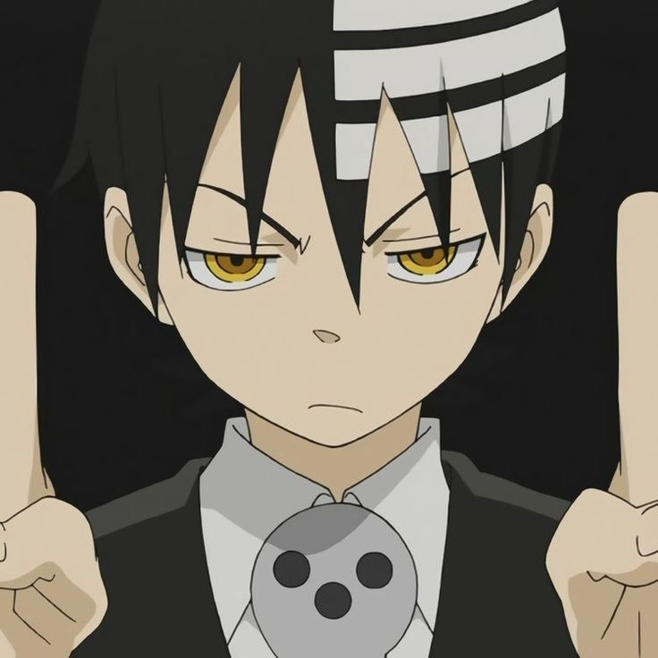

Aviso
Esta página é dedicada a mostrar um pouco sobre a equipe.
Sobre
Oi! Aqui vou contar um pouco sobre os devs.
Esse site foi criado por mim, Hayashi (ou pode me chamar como quiser) com a ajuda do HioriYo — mas ele prefere ser chamado de P-chan.
Tudo isso começou como um trabalho escolar, mas pretendo continuar melhorando o site com o tempo.
Sobre mim: sou um estudante de programação, aprendendo a criar sites e apps. Curto muito a cultura japonesa, principalmente a comida! Gosto de programar, jogar, ler mangás, livros educativos e assistir de tudo um pouco — filmes, séries, desenhos e animes. Acho que é isso!

Agora, um pouco sobre o HioriYo:
